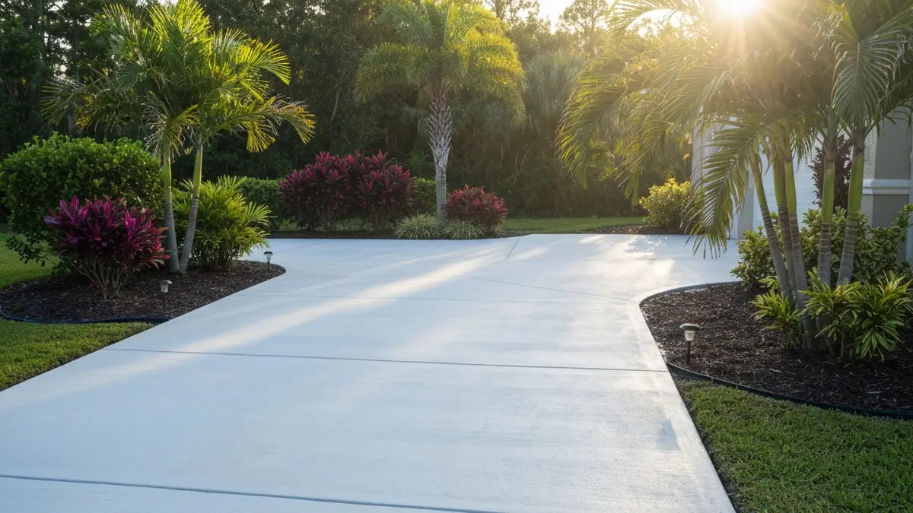
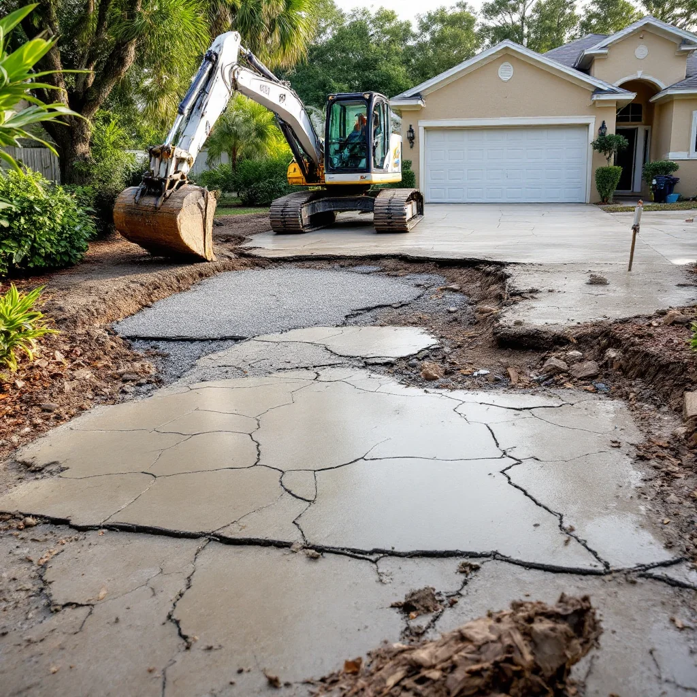

Land O Lakes is a rapidly growing unincorporated community in Pasco County just north of Hillsborough County, home to more than 35,000 residents in master-planned communities and established neighborhoods along US-41 and the Suncoast Parkway. As one of Tampa Bay's fastest-expanding suburbs, Land O Lakes sees constant new home construction alongside aging driveways and patios on older properties that need replacement or repair. Tampa Concrete Pros serves Land O Lakes with full concrete services including driveways, patios, stamped concrete, and commercial flatwork.

Our Concrete Services in Land O Lakes
- Driveway Replacement & Repair — Full driveway installations and crack repair for Land O Lakes homes.
- Stamped Concrete Patios — Custom patterns and colors to enhance outdoor living spaces.
- Concrete Sidewalks & Walkways — New installation and trip hazard repair.
- Commercial Flatwork — Parking lots, warehouse floors, and commercial pads.
- Concrete Resurfacing — Restore existing concrete without full replacement.

Frequently Asked Questions — Concrete in Land O Lakes
How much does a concrete driveway cost in Land O Lakes?
A standard concrete driveway in Land O Lakes runs $4 to $8 per square foot installed, putting a typical two-car driveway at $3,200 to $7,500 depending on length, thickness, and finish options. Stamped or decorative concrete costs more. We provide free on-site estimates with no obligation.
Do you serve both new construction and replacement projects in Land O Lakes?
Yes. We work with both new construction builders and homeowners replacing existing driveways. Land O Lakes has active new construction in communities like Connerton, Bexley, and Watergrass, and we are experienced serving both types of projects.
Why do concrete driveways need replacement sooner in Florida than other states?
Florida's combination of sandy soil, frequent rainfall, and the cycle of wet and dry seasons creates more movement under concrete slabs than in northern climates. Tree root intrusion is also a significant factor in Land O Lakes' established neighborhoods. Most Florida concrete driveways last 20 to 30 years before needing full replacement.
Need Concrete Work in Land O Lakes?
Free estimates · Licensed & insured · Serving Land O Lakes and Tampa Bay
📞 (813) 705-9021